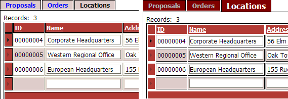

Editing a Tabbed GridLinker Button Template
The tabbed gridlinker applies a default style to the tabs that appear above child grids. For each grid that has one or more child grids:
check the Grid Properties > Customize tab button template field.
Click
 in the Grid Properties > Tab button
template field to display the Customize Tab
Button Template dialog box.
in the Grid Properties > Tab button
template field to display the Customize Tab
Button Template dialog box.Edit the parameters of the style tag. Remember that each attribute setting pair is separated by a colon ":" and terminated by a semicolon ";".
Click OK to save your work and return to the Tabbed GridLinker Builder.
The following example starts with this code.
|
<a hr style="display: block; font-weight:bold; normal; text-decoration: none; border: solid 1px black; border-bottom: none; padding: 2px 10px;">{ButtonHTML}</a> |
The modification sets the font of the tab text and the background color of the tab.
|
<a hr style="display: block; font-weight:bold; normal; text-decoration: none; font:Verdana; background-color:#800000; border: solid 1px black; border-bottom: none; padding: 2px 10px;">{ButtonHTML}</a> |
After returning to the to the Tabbed GridLinker Builder, the following changes were made to the Grid Properties > Tab button (selected) and Grid Properties > Tab button (not selected) selected fields of each child grid. Note that the example below shows the label text for a grid named "Locations". This text would change for your grids.
| Tab button (selected) | <font style="color:#FFFFFF;font-size:12pt;">Locations</font> |
| Tab button (not selected) | <font style="color:#AFAFAF">Locations</font> |
The result is that the selected tab has a larger white font. The not selected tab has a smaller gray font. The picture below shows before (on the left) and after (on the right).

See Also
Creating Tabbed GridLinker Components
Limitations
Web publishing applications only.